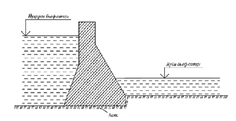
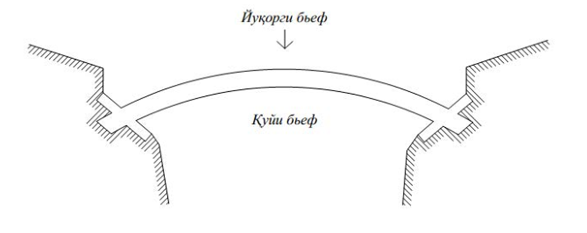
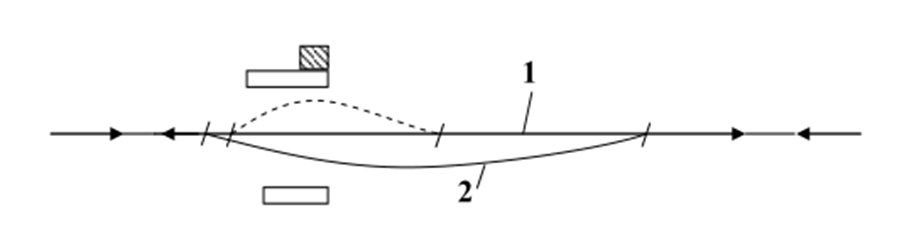
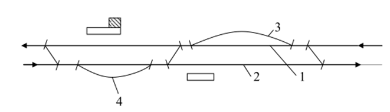
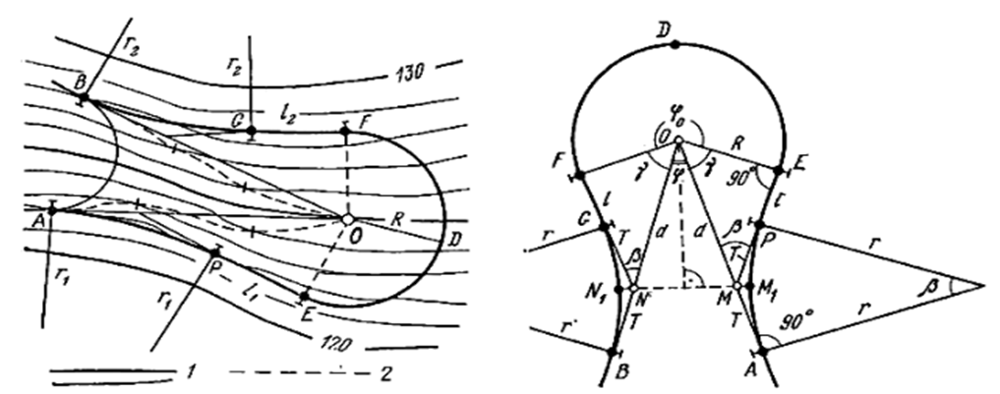
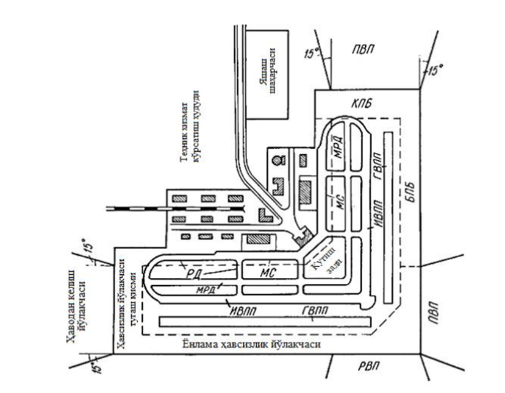
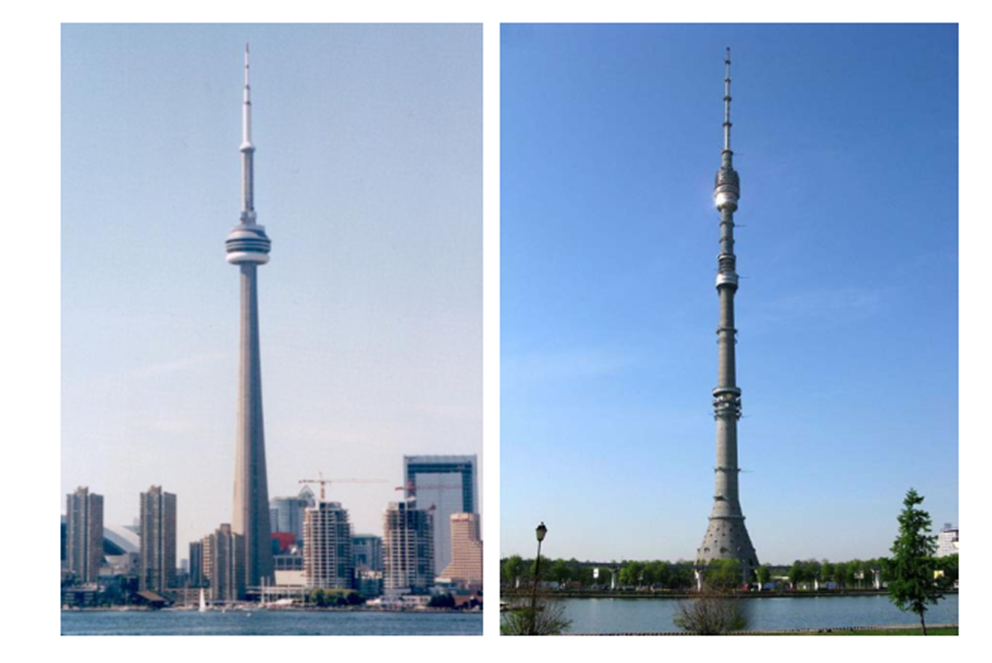

3-маруза Мавзу: Гидротехник иншоотлар, транспорт ва алоқа иншоотлари
Гидротехник иншоотлар дарёлар энергиясидан фойдаланиш, кемасозлик ва ёғочларни оқизишни
таъминлаш (ташиш), ахоли яшаш пунктлари ва саноат корхоналарини сув билан таъминлаш,
далаларни суғориш, ишлатилган ва йиғилган сувларни чиқариб юбориш мақсадида қурилади.
Гидротехник иншоотларга плотина ва дамбалар, қувур, шахта ва зовурли сув ўтказгич
иншоотлар,
қирғоқни мустахкамловчи иншоотлар
киради.
Плотиналар — дарёни тўсувчи, сувни турли сатҳларда ушлаб турувчи иншоотлар ҳисобланади.
Улар
ГЭСлар учун электр қувватини олиш учун фойдаланилиши мумкин булган сув омборини барпо этиш
мақсадида хизмат
қилади.
Плотина ажратиб турувчи юқори ва пастки сув сатҳлари баландликлари фарқи босим
дейилади.
Плотинадан юқорида жойлашган дарё қисми юқорги бьеф, плотинадан пастки қисми пастки бьеф деб
номланади.
Плотиналар гравитацион, аркали ва аркали-гравитацион турларга бўлинади. Гравитацион
плотиналарнинг таг қисми юқори қисмига нисбатан энлироқ бўлади(1-расм).

1-расм . Гравитацион плотина

2-расм. Аркали плотина.
Аркали плотиналар тоғли жойдан ўтган дарёларда қурилади. Улар мустаҳкам қояли қирғоққа
таянган бўлиб, ярим айлана шаклига эга.
Дамбалар паст жойларни сув босиб қолмаслиги ҳамда сув омборини чегаралаш учун хизмат
қилади.
Сув ўтказувчи иншоотлар сув омборидаги ортиқча сувларни ўтказиб юбориш учун ҳамда аҳоли
яшаш
пунктларида ва айрим саноат корхоналаридаги қайта ишланган сувларни оқизиш учун қурилади.
Каналлар магистрал ва сув ости, суғориш, ирригация ва бошқа турларга бўлинади.
Бир нечта гидротехник иншоотлар мажмуасига гидроузел дейилади. Одатда гидроузел таркибига
гидроэлектр станция киради. Йирик гидроузеллар 10-20км2 майдонни эгаллаши мумкин,
сув омбори
эса 200300км2.
Хозирги пайтда гидроэлектр станцияларни тоғли дарёларга қуриш афзал ҳисобланади. Бундай
жойларда плотиналар сезиларли баландлиги ва чуқурлиги хамда нисбатан кичкина майдондаги сув
юзаси билан ажралади.
Асосий транспорт тармоқлари сифатида темир йўллар, автомобил йўллари, ҳаво йўли, сув
йўли,
магистрал қувирўтказгич ва бошқалар ҳисобланади.
Саноат эҳтиёжининг ўсиб бориши, юк ва йўловчи ташишларнинг сезиларли даражада ортиб
бориши,
келажакда транспорт тармоғини кенгайтиришни ва транспорт тугунларини ривожлантиришни талаб
этади.
Темир йўллар. Биринчи темир йўл Россияда 1838 йилда Петербургдан Павловскийгача
қурилган.
Темир йўллар-мураккаб техник тизим бўлиб, катта сондаги иншоот ва қурилмалардан,
механизм ва
машиналардан, автоматлашитирлган жихозлардан ташкил топган.
Йўлнинг ўтказиш қуввати, унинг бир суткада ўтказиши муумкин бўлган поездлар жуфти сони
билан
аниқланади. Ташиш қуввати эса бир йилда темир
йўл ташиб келтириши мумкин бўлган юк хажми билан (млн.т./йил)
аниқланади.
Темир йўллар 3та даражага бўлинади.
Темир йўлнинг асосий элементлари бўлиб, тўғри участка, айлана ва ўтиш қайрилмалари
ҳисобланади.
Қайрилмалар учун қуйидаги стандарт радиуслар белгиланган: 150м, 180м, 200, 250 ...
4000м.
Йўлнинг тўғри чизиқли қисми ва вертикал айланма қайрилма темир йўлнинг профил элементи
ҳисобланади. Тўғри чизиқли қисми і нишаблик (i=h/) билан характерланади.
Бир томонлама йўлларда, қарши келадиган поездни ўтказиб юбориш учун кичкина станция
(разъезд) барпо этилади (3-расм).
Икки томонлама йўлларда поездларни ўзиб ўтиб кетиши учун ўзиб ўтиш пунктлари барпо
этилади (4-расм).

3-расм. Бир томонлама темир йўлда ўтказиб юбориш станцияси схемаси. 1-асосий йўл; 2-ёнлама
йўл.

4-расм. Ўзиб ўтиш пункти схемаси. 1,2-асосий йўллар; 3,4-ёнлама йўллар.
Автомобил
йўллари. Автомобил йўллари
мавқеи
ва
харакат
интенсивлигига боғлиқ холда 5та категорияга бўлинади.
Темир йўллар каби автомобил йўллари тўғри участка, қайрилма ва ўтиш қайрилмаларига эга.
Автомобил йўлларининг бўйлама профили тўғри чизиқли участкалар ва вертикал айланма
қайрилмадан ташкил топган.
Автомобил йўлларининг кесишиш ва туташиш участкалари бирмунча мураккаб элементи
ҳисобланади.
Имкон борича автомобил йўли ўқларининг кесишиш бурчаклари 90°га яқин бўлиши мақсадга
мувофиқ.
Автомобил йўлларини қуришда тик қиялик жойларда, жарлик, сойлик ва бошқа турдаги
тўсиқларни
айланиб ўтишда ўткир бурчакли эгри чизиқ кўринишдаги серпантиналар ташкил этилади
(8.3-расм).

5-расм. Серпантиналар
Автомобил йўлларида қуриладиган йўл бўйи иншоотлари нисбатан мураккаб бўлмайди.
Аэропортлар. Транспорт тизимида ҳаво транспорт тизимига алоҳида эътибор қаратилади.
Биринчи
навбатда ундан йўловчиларни ташишда фойдаланилади.
Аэропортлар ҳаво транспортининг асосий
иншооти хисобланади.
Фойдаланилишига қараб аэропортлар халқаро, республика ва махаллий ахамиятга эга бўлган
турларга бўлинади, йиллик йўловчи ташиш хажмига қараб эса 5та классга бўлинади. 8.4-расмда
аэропортнинг бош плани схемаси
келтирилган.

Учиш-қўниш полосаси шамолнинг устунлик қилувчи йўналиши бўйлаб
жойлаштирилади.
Аэропорт таркиби аэровокзал, вокзал олди майдони, перрон, бурилиш йўллари, турли техник
ёрдам кўрсатиш биноларидан ташкил топган. Ундан ташқари аэропортлар ер ости
коммуникацияларига эга.
Қувурўтказгич транспорти. Қувурўтказгич транспортини бошқа барча турдаги транспортлар
билан
таққослаганда, унинг асосий афзаллиги юкни ҳеч қандай идишсиз ва ғилофсиз ташиш имкониятига
эга. Қувурўтказгич транспортининг асосий юки сифатида нефть, нефть маҳсулотлари, газ ва
сувдир.
Қувурўтказгич транспортининг асосий элементлари бўлиб, бош насос станцияси, оралиқ
насос
станциялари, резервуарлар, дюкерлар, эстакадалар
телеминоралар – Торонто – 553м, Останкино – 540м ва бошқалар. 7-расмда
энг баланд телеминоралар келтирилган.

Бундай иншоотларни қуриш учун майдон танлашда тупроқ таркибини,
шамол таъсири ва туманнинг сейсмик холатини ўрганишга алоҳида эътибор қаратилади. Минорани
куриш ва ундан фойдаланишда иншоот ўқининг тиклигига юқори талаб (1:1000-1:2000) қўйилади.